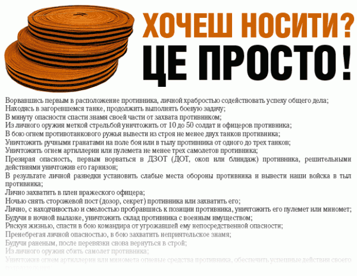

Акция «Георгиевская ленточка» пройдёт в этом году в Кузбассе уже в шестой раз. Волонтёры как и раньше раздадут сто тыщ ленточек, и по всей вероятности большинство из них будет опять использовано не так, как полагается. Кто-то привяжет на сумку, большинство на антенну автомобиля, кто-то просто положит на полку.
Моё отношение к георгиевской ленточке поменялось за последние два года на много градусов. Раньше я был молодой и рассуждал как — георгиевская лента — это частный случай гвардейской ленты, которая является настоящим знаком отличия. Отличия — от слова «отличился».
Говорят получить настоящую георгиевскую ленту было несложно:

Соответственно и отношение у меня (внука трех фронтовиков, кстати)
Не гнил, сука, в окопе?! Не штурмовал ДЗОТ?! И посмел нацепить ленту? Да ты даже хуже тех, кто выгуливает собаку без совочка.
Шли годы (два). Приходило понимание.
За окном 2011 год. Это значит, что самому младшему фронтовику 2011-(1941-14)=84 года. До 84 лет в нынешней экологии доживает мало кто. Это значит, что участников ВОВ, де юре среди нас почти не осталось? Нужен ли этот праздник нам? Соглашусь с миллионами россиян, у которых День Победы конкурирует разве что с пьяным Новым Годом. Ответ — да.
Любой праздник немыслим без символа. Без психологического якоря, без eye-стоппера. У 8-го марта это очередь за хоть-какими нибудь цветами, у Нового года ёлка и китайские салюты, 1 сентября гладиолусы, пасха — яйца. Символ — атрибут непременный. Фронтовики с орденами символ, к сожалению исчезающий. Фротновиков еще какое-то время заменят труженики тыла с медалями «За освоение целины», но дальше — пустота.
В минувшие выходные я писал «Тотальный диктант». Допустил, кстати, всего 2 пунктуационных ошибки. Учитывая, что текст очень авторский, а диктантов я не писал с 1992 года, — очень неплохо. Так вот. Как сказано в комментариях к «Тотальному диктанту», «Неожиданно проблемным оказалось написание Московский университет с большой буквы, так как для многих из текста не было очевидным, что речь идет именно о Московском университете. Ошибка в данном случае спровоцирована незнанием культурных и исторических реалий: во время войны в Москве был, конеч-но, единственный Московский университет. На сайте totaldict.ru разгорелась не шуточная дискуссия по этому поводу, его посетители подняли архивные материалы, чтобы установить, как назывался МГУ в разные периоды своего существования. И все-таки написание с маленькой буквы в данном случае является ошибкой, так как многие правила орфографии и пунктуации основаны на смысловом принципе. Предполагается, что при написании диктанта пишущий вникает в суть его содержания. Остается только констатировать факт, что уникальность Московского университета, тем более в годы войны, для молодого поколения совсем не очевидна.»
Для «молодого поколения» неочевидна уникальность МГУ в военные годы. Вероятнее всего и «уникальность» ВОВ уже не та. Нет никакого другого способа «заякорить» аудиторию, кроме как привязать её к узнаваемому графическому образу. И неважно, почему тот или иной молодой человек вдруг вспомнил про этот праздник. Главное одно — День Победы воспринимается всем как день, символизирующий подвиг русского народа. И неважно, даже если символ этого праздника привязан к антенне немецкого автомобиля (который всё равно или уже собирается или скоро будет собираться на территории Китая).
Деда Коля, деда Паша, баба Надя… Я помню, я горжусь.